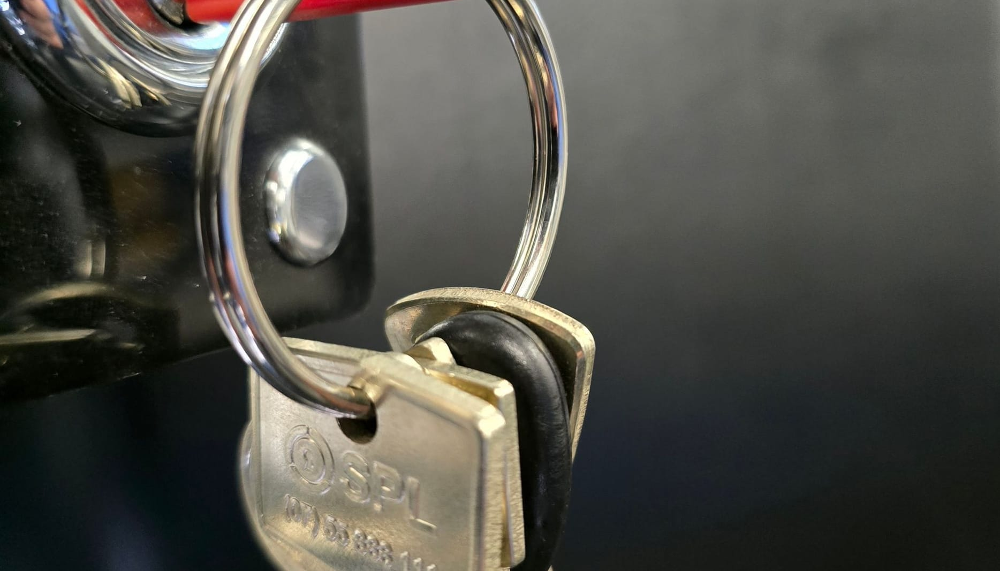
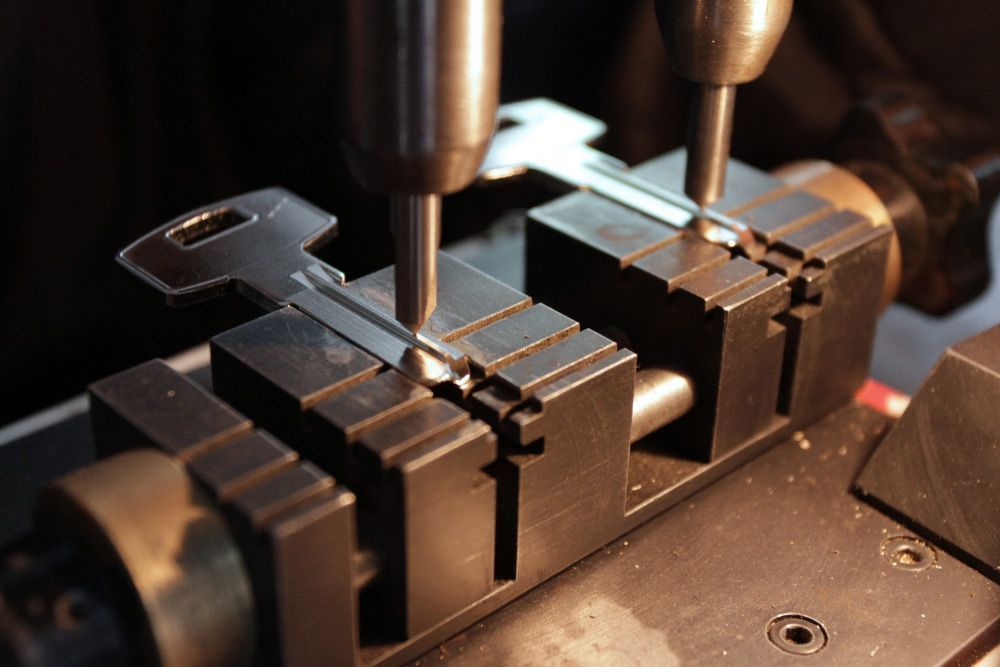
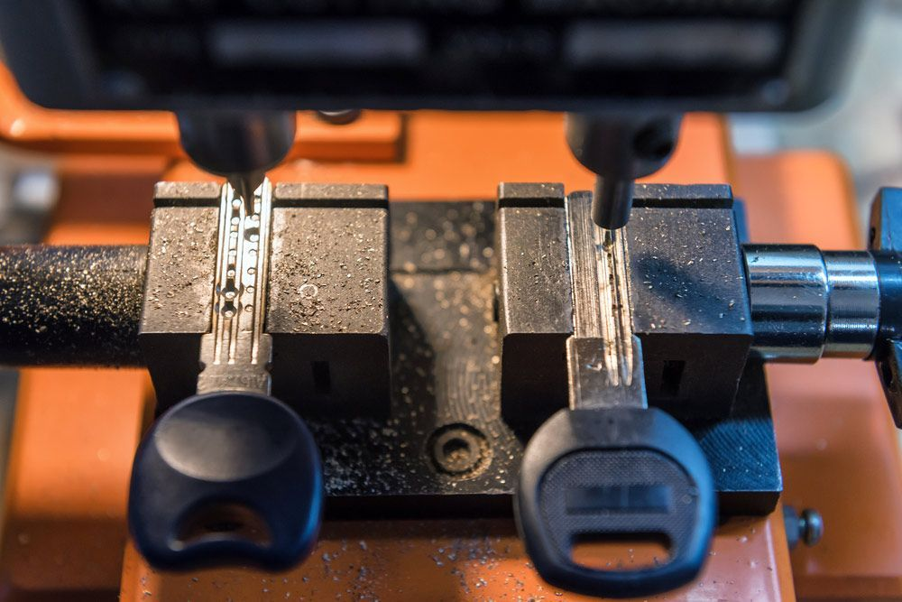
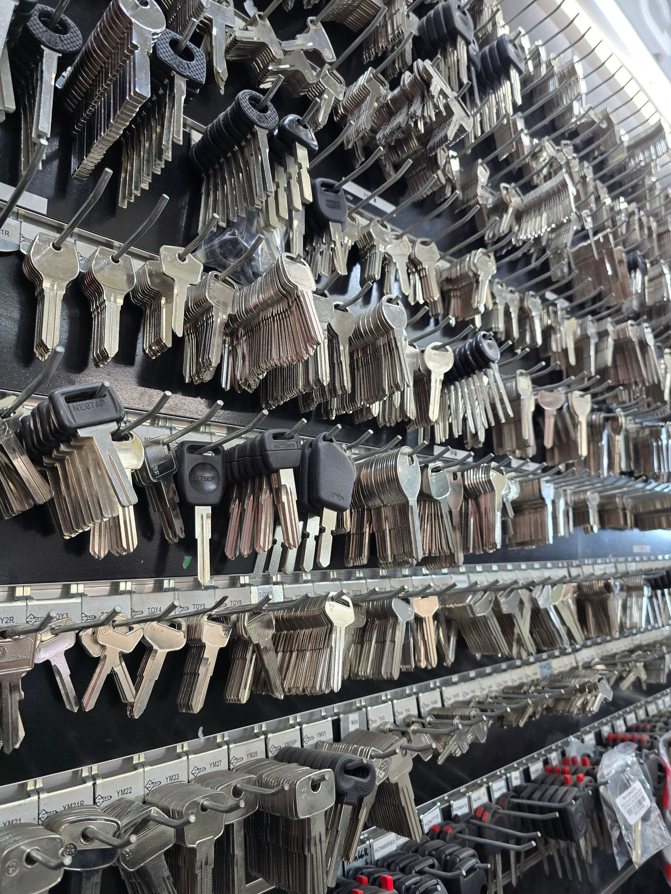

On this page
AT A GLANCE
A restricted key system from SPL Security Solutions will prevent unauthorised key copying giving you peace of mind—you will always know who has a copy of your keys! Northern NSW is serviced from our Ballina showroom.

A restricted key system from SPL Security Solutions will prevent unauthorised key copying giving you peace of mind—you will always know who has a copy of your keys!
A restricted key system utilises patent-protected keys and lock barrels to restrict access to your building or complex and stop unauthorised duplication. The special patented keys are only available to approved agents; you won’t find them at the local hardware or key cutting shop and details about who is authorised to have them duplicated are recorded by us.
We will not cut a duplicate key without a letter or order signed by one of the signatories for your system. This gives you complete peace of mind, knowing how many keys are in circulation at any one time. Call (07) 55 888 111 to find out more. We operate throughout the Gold Coast, Brisbane and Northern NSW.
Master Key Systems
In addition to our security system installation and maintenance, we offer 24/7 alarm monitoring for comprehensive protection. Our alarm monitoring service allows us to remotely monitor your property for potential security breaches or incidents. If an alarm is triggered, our team will immediately take the appropriate course of action, notifying the relevant authorities.

Restricted Master Key Systems

As the name implies, these systems restrict the availability and distribution of key blanks and barrels. There are many providers of restricted key products through locksmith channels and they all have a registered or restricted design pattern on a key or barrel. The restricted system provider supplies the system to the locksmith under an agreement that is both legally and ethically binding. This helps to ensure the integrity of the restricted product.
The biggest advantage of this system is the locksmith controls the system. Whenever the client needs additional keys, they must order the keys with a signed request. The client nominates a responsible person within their organisation to be the designated signatory and a sample of that person’s signature is kept on file to verify each order. In addition, all restricted keys are individually stamped with system number, rank and sequential generation, which can be used to track keys and the design of the system.
An alternative option is restricted/encrypted electronic fob technology, which uses secure, encrypted signals to grant access to buildings or vehicles. This prevents unauthorised entry by ensuring that only authenticated fobs can communicate with the locking mechanism, enhancing security against hacking or cloning attempts.
High-Security Restricted Master Key Systems
Unfortunately the freedom of expression that has come with the Worldwide Web also has a downside and the security industry has not been excluded, there is now an abundance of websites only too willing to share for fame or fee ways to breach many security systems. The first to suffer has been the humble “in line pin cylinder” which is the basis of approximately 98% of all locks in Australia. The solution is to install one of the high security locking systems now available such as Abloy Protec which is used extensively by private, commercial and government end users who demand the ultimate in high security master key systems.
Restricted key systems have been the industry standard worldwide for many years and is a very cost effective way to ensure security over locks and keys.
Contact SPL Security Solutions today for expert advice on how to secure your home or business.


Frequently Asked Questions
-
What is a restricted or security key?
A restricted key is a key that can only be cut by an authorised locksmith with authority from an authorised person who manages the key system.
-
How does the restriction work?
Restricted keys are designed by a manufacturer who registers or patents the design of the key to prevent copying. The manufacturer then sets terms to the Locksmithing industry on how the keys can be used. This comes in 3 levels:
- Level 1 is factory-restricted so only the manufacturer can acquire.
- Level 2 is locksmith-restricted, where only approved locksmiths can acquire specific profiles of the key design.
- Level 3 is open broach where any locksmith can acquire the profile of the keys.
-
Can I transfer my system to another locksmith?
It is possible to have a restricted system transferred between locksmiths. However, this requires the receiving locksmith to have or be able to have the profile of key that the system is on.
For example, if the system is on an open broach, then it can be transferred to any locksmith who has the profile. However, if the system is on an exclusive profile, then the system cannot be transferred as the manufacturer has agreed to only allow that locksmith to have that profile of key. In this example, if a transfer was needed, then it is possible to contact the factory and arrange for the system to be factory-controlled.
-
What happens when the patent/registered design expires?
When the patent or design registration expires, the legal protection against copying the keys expires as well. The majority of Australian locksmiths are members of a security group, like the Master Locksmiths Association of Australia and New Zealand or the Locksmith Guild of Australia where the bylaws of membership continue to protect the security of keys after the patents or registrations expire. It is still recommended that by the time of the expiry, an upgrade should be considered.
-
How do signatories work?
A signatory is a person who is authorised to make requests and place orders relating to the restricted system. A signatory can be anyone from owners, managers, caretakers and body corporates to company representatives. When the system is set up a registration form is supplied and once returned completed, the persons listed on the registration are added as the authorities to manage the system. Only persons on the authority list can order extra keys or works for the system.
-
How much do restricted keys cost?
Our company charges a set price for restricted keys. Once sold to the customer, they are the property of the purchaser, who has the right to use them as they wish, including reselling them at a higher price.
-
Why do I need permission to change a lock or get keys?
In most circumstances, the system has been set up for an entire premise or building. This means the authorities on the system are responsible for the security and maintenance of the key system for the location and must be aware of any changes. The signatories are the people in charge of the system. The locksmith must abide by their directions.
-
What if I have different keys for the same building? Why can I order some keys but not others?
Restricted systems can be set up in a number of ways including limiting the authority of the signatories. This can be in the form of requiring multiple signatories to authorise keys or only allowing for certain signatories to be able to order certain keys but not others. It could also be that there are multiple systems established in the location that are controlled by different persons. An example of this would be a high rise where the body corporate and management have separate systems for the units they manage, though they are in the same building and work together. If the signatories for management are not signatories for the body corporate’s system, the locksmith cannot provide much in the way of information to the managers about the body corporate’s system as they are not authorised, and vice versa for the body corporate on the management system.
-
Why as an owner can I not get keys?
This would be due to the listed signatories. In the case of a unit in a complex or a high rise, most systems are controlled by either building management or the body corporate as they are responsible for the maintenance of the security and the doors of the building. In the case of a business owner this would be the way the system was set up.
-
How can the signatories be changed?
The signatories on a system can be changed by submitting a Signatory Registration Form to the locksmith requesting changes to be made. The registration form contains instructions on how the form needs to be completed. Regardless of whether a signatory has left the company/premises, unless they are removed from the signatory list they are still listed as an authority on the system.
Service Areas
SPL Security Gold Coast
The Gold Coast is serviced from our Bundall office.
Gold Coast showroomSPL Security Brisbane
Brisbane is serviced from our Gold Coast office.
Gold Coast showroomSPL Security Northern NSW
Northern NSW is serviced from our Ballina showroom.
Ballina showroom